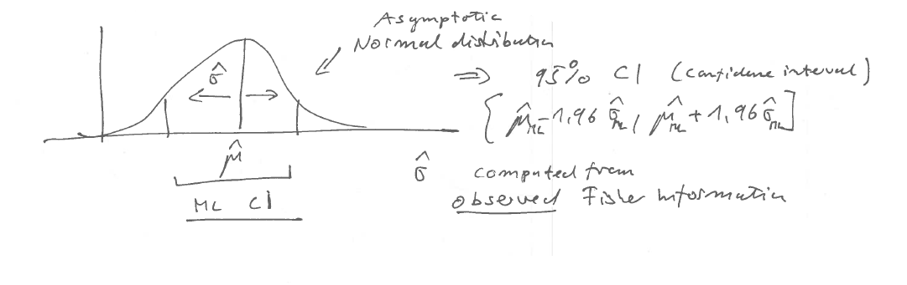

10 Quadratic approximation and normal asymptotics
10.1 Approximate distribution of maximum likelihood estimates
Quadratic log-likelihood of the multivariate normal model
Assume we observe a single sample \(\boldsymbol x\sim N(\boldsymbol \mu, \boldsymbol \Sigma)\) with known covariance. Noting that the multivariate normal density is \[ f(\boldsymbol x| \boldsymbol \mu, \boldsymbol \Sigma) = (2\pi)^{-\frac{d}{2}} \det(\boldsymbol \Sigma)^{-\frac{1}{2}} \exp\left(-\frac{1}{2} (\boldsymbol x-\boldsymbol \mu)^T \boldsymbol \Sigma^{-1} (\boldsymbol x-\boldsymbol \mu) \right) \] the corresponding log-likelihood for \(\boldsymbol \mu\) is \[ \ell_1(\boldsymbol \mu) = C - \frac{1}{2}(\boldsymbol x-\boldsymbol \mu)^T \boldsymbol \Sigma^{-1} (\boldsymbol x-\boldsymbol \mu) \] where \(C\) is a constant that does not depend on \(\boldsymbol \mu\). Note that the log-likelihood is a quadratic function (both for \(\boldsymbol x\) and \(\boldsymbol \mu\)) and the maximum of the function lies at \(\boldsymbol \mu= \boldsymbol x\) with value \(C\).
Quadratic approximation of a log-likelihood function
Now consider the quadratic approximation of a general log-likelihood function \(\ell_n(\boldsymbol \theta)\) for \(\boldsymbol \theta\) around the MLE \(\hat{\boldsymbol \theta}_{ML}\) (Figure 10.1).
We assume the underlying model is regular and that \(\nabla \ell_n(\hat{\boldsymbol \theta}_{ML}) = 0\), i.e. the gradient at the maximum vanishes. The Taylor series approximation of scalar-valued function \(f(\boldsymbol x)\) around \(\boldsymbol x_0\) is \[ f(\boldsymbol x) = f(\boldsymbol x_0) + \nabla^T f(\boldsymbol x_0)\, (\boldsymbol x-\boldsymbol x_0) + \frac{1}{2} (\boldsymbol x-\boldsymbol x_0)^T \nabla \nabla^T f(\boldsymbol x_0) (\boldsymbol x-\boldsymbol x_0) + \ldots \] Applied to the log-likelihood function this yields
\[\ell_n(\boldsymbol \theta) \approx \ell_n(\hat{\boldsymbol \theta}_{ML} )- \frac{1}{2}(\hat{\boldsymbol \theta}_{ML}- \boldsymbol \theta)^T J_n(\hat{\boldsymbol \theta}_{ML})(\hat{\boldsymbol \theta}_{ML}-\boldsymbol \theta)\]
This is a quadratic function with maximum at \(( \hat{\boldsymbol \theta}_{ML}, \ell_n(\hat{\boldsymbol \theta}_{ML}) )\). Note the appearance of the observed Fisher information \(J_n(\hat{\boldsymbol \theta}_{ML})\) in the quadratic term. There is no linear term because of the vanishing gradient at the MLE.
Crucially, this approximated log-likelihood takes the same form as if \(\hat{\boldsymbol \theta}_{ML}\) was sampled from a multivariate normal distribution with mean \(\boldsymbol \theta\) and with covariance given by the inverse observed Fisher information.
Note that this requires a positive definite observed Fisher information matrix so that \(J_n(\hat{\boldsymbol \theta}_{ML})\) is actually invertible!
Example 10.1 Quadratic approximation of the log-likelihood for a proportion:
From Example 8.1 we have the log-likelihood \[ \ell_n(\theta) = n \left( \bar{x} \log \theta + (1-\bar{x}) \log(1-\theta) \right) \] and the MLE \[ \hat{\theta}_{ML} = \bar{x} \] and from Example 9.1 the observed Fisher information \[ \begin{split} J_n(\hat{\theta}_{ML}) = \frac{n}{\bar{x} (1-\bar{x})} \end{split} \] The log-likelihood at the MLE is \[ \ell_n(\hat{\theta}_{ML}) = n \left( \bar{x} \log \bar{x} + (1-\bar{x}) \log(1-\bar{x}) \right) \] This allows us to construct the quadratic approximation of the log-likelihood around the MLE as \[ \begin{split} \ell_n(\theta) & \approx \ell_n(\hat{\theta}_{ML}) - \frac{1}{2} J_n(\hat{\theta}_{ML}) (\theta-\hat{\theta}_{ML})^2 \\ &= n \left( \bar{x} \log \bar{x} + (1-\bar{x}) \log(1-\bar{x}) - \frac{(\theta-\bar{x})^2}{2 \bar{x} (1-\bar{x})} \right) \\ &= C + \frac{ \bar{x} \theta -\frac{1}{2} \theta^2}{ \bar{x} (1-\bar{x})/n} \\ \end{split} \] The constant \(C\) does not depend on \(\theta\), its function is to match the approximate log-likelihood at the MLE with that of the corresponding original log-likelihood. The approximate log-likelihood takes on the form of a normal log-likelihood (Example 8.2) for one observation of \(\hat{\theta}_{ML}=\bar{x}\) from \(N\left(\theta, \frac{\bar{x} (1-\bar{x})}{n} \right)\).
Figure 10.2 shows the Bernoulli log-likelihood function and its quadratic approximation illustrated for data with \(n = 30\) and \(\bar{x} = 0.7\):
Asymptotic normality of maximum likelihood estimates
Intuitively, it makes sense to associate large amount of curvature of the log-likelihood at the MLE with low variance of the MLE (and conversely, low amount of curvature with high variance).
From the above we see that for regular models:
- normality implies a quadratic log-likelihood,
- conversely, taking an quadratic approximation of the log-likelihood implies approximate normality, and
- in the quadratic approximation the inverse observed Fisher information plays the role of the covariance of the MLE.
This suggests the following theorem:
Asymptotically, the MLE of the parameters of a regular model is normally distributed around the true parameter and with covariance equal to the inverse of the observed Fisher information:
\[\hat{\boldsymbol \theta}_{ML} \overset{a}{\sim}\underbrace{N}_{\text{multivariate normal}}\left(\underbrace{\boldsymbol \theta_{\text{true}}}_{\text{mean vector}},\underbrace{\boldsymbol J_n(\hat{\boldsymbol \theta}_{ML})^{-1}}_{\text{ covariance matrix}}\right)\]
This theorem about the distributional properties of MLEs greatly enhances the usefulness of the method of maximum likelihood. It implies that in regular settings maximum likelihood is not just a method for obtaining point estimates but also also provides estimates of their uncertainty.
Remarks on the asympotics
However, we need to clarify what “asymptotic” actually means in the context of the above theorem:
Primarily, it means to have sufficient sample size so that the log-likelihood \(\ell_n(\boldsymbol \theta)\) is sufficiently well approximated by a quadratic function around \(\hat{\boldsymbol \theta}_{ML}\). The better the local quadratic approximation the better the normal approximation!
In a regular model with positive definite observed Fisher information matrix this is guaranteed for large sample size \(n \rightarrow \infty\) thanks to the central limit theorem).
However, \(n\) going to infinity is in fact not always required for the normal approximation to hold! Depending on the particular model a good local fit to a quadratic log-likelihood may be available also for finite \(n\). As a trivial example, for the normal log-likelihood it is valid for any \(n\).
In the other hand, in non-regular models (with nondifferentiable log-likelihood at the MLE and/or a singular Fisher information matrix) no amount of data, not even \(n\rightarrow \infty\), will make the quadratic approximation work.
Remarks:
- The asymptotic normality of MLEs was first discussed in Fisher (1925) 1
The technical details of the above considerations are worked out in the theory of locally asymptotically normal (LAN) models pioneered in 1960 by Lucien LeCam (1924–2000).
There are also methods to obtain higher-order (higher than quadratic and thus non-normal) asymptotic approximations. These relate to so-called saddle point approximations.
Information inequality and asymptotic optimal efficiency
Assume now that \(\hat{\boldsymbol \theta}\) is an arbitrary and unbiased estimator for \(\boldsymbol \theta\) and the underlying data-generating model is regular with density \(f(\boldsymbol x| \boldsymbol \theta)\).
Harald Cramér (1893–1985), C. Radhakrishna Rao (1920–2023) and others demonstrated in 1945 the so-called information inequality, \[ \operatorname{Var}(\hat{\boldsymbol \theta}) \geq \frac{1}{n} \boldsymbol I^{\text{Fisher}}(\boldsymbol \theta_{\text{true}})^{-1} \] which puts a lower bound on the variance of an estimator for \(\boldsymbol \theta\). (Note for dimension \(d>1\) this is a matrix inequality, meaning that the difference matrix is positive semidefinite).
For large sample size with \(n \rightarrow \infty\) and \(\hat{\boldsymbol \theta}_{ML} \rightarrow \boldsymbol \theta_{\text{true}}\) the observed Fisher information becomes \(J_n(\hat{\boldsymbol \theta}_{ML}) \rightarrow n \boldsymbol I^{\text{Fisher}}(\boldsymbol \theta_{\text{true}})\) and therefore we can write the asymptotic distribution of \(\hat{\boldsymbol \theta}_{ML}\) as \[ \hat{\boldsymbol \theta}_{ML} \overset{a}{\sim} N\left( \boldsymbol \theta_{\text{true}}, \frac{1}{n} \boldsymbol I^{\text{Fisher}}(\boldsymbol \theta_{\text{true}})^{-1} \right) \] This means that for large \(n\) in regular models \(\hat{\boldsymbol \theta}_{ML}\) achieves the lowest variance possible according to the Cramér-Rao information inequality. In other words, for large sample size maximum likelihood is optimally efficient and thus the best available estimator will in fact be the MLE!
However, as we will see later this does not hold for small sample size where it is indeed possible (and necessary) to improve over the MLE (e.g. via Bayesian estimation or regularisation).
Non-regular models
For non-regular models the asymptotic normality does not hold. Instead, the (asympotic) distribution of the MLE must be obtained in by other means.
Example 10.2 Distribution of MLE for upper bound \(\theta\) of the uniform distribution:
This continues Example 8.4 to find the distribution of \(\hat{\theta}_{ML}\). Due to a discontinuity in the density at the MLE the observed Fisher information cannot be computed and the normal approximation for the distribution of \(\hat{\theta}_{ML}\) is not valid.
Nonetheless, one can still obtain the sampling distribution of \(\hat{\theta}_{ML}=x_{[n]}\). However, not via asymptotic arguments but instead by understanding that \(x_{[n]}\) is an order statistic (see https://en.wikipedia.org/wiki/Order_statistic) with the following properties: \[\begin{align*} \begin{array}{cc} x_{[n]}\sim \theta \, \operatorname{Beta}(n,1)\\ \\ \operatorname{E}\left(x_{[n]}\right)=\frac{n}{n+1} \theta\\ \\ \operatorname{Var}\left(x_{[n]}\right)=\frac{n}{(n+1)^2(n+2)}\theta^2\\ \end{array} \begin{array}{ll} \text{"n-th order statistic" }\\ \\ \\ \\ \approx \frac{\theta^2}{n^2}\\ \end{array} \end{align*}\]
Note that the variance decreases with \(\frac{1}{n^2}\) which is much faster than the usual \(\frac{1}{n}\) of an “efficient” estimator. Correspondingly, \(\hat{\theta}_{ML}\) is a so-called “super efficient” estimator.
10.2 Quantifying the uncertainty of maximum likelihood estimates
Estimating the variance of MLEs
In the previous section we saw that MLEs are asymptotically normally distributed, with the inverse Fisher information (both expected and observed) linked to the asymptotic variance.
This leads to the question whether to use the observed Fisher information \(J_n(\hat{\boldsymbol \theta}_{ML})\) or the expected Fisher information at the MLE \(n \boldsymbol I^{\text{Fisher}}( \hat{\boldsymbol \theta}_{ML} )\) to estimate the variance of the MLE?
- Clearly, for \(n\rightarrow \infty\) both can be used interchangeably.
- However, they can be very different for finite \(n\) in particular for models that are not exponential families.
- Also normality may occur well before \(n\) goes to \(\infty\).
Therefore one needs to choose between the two, considering also that
- the expected Fisher information at the MLE is the average curvature at the MLE, whereas the observed Fisher information is the actual observed curvature, and
- the observed Fisher information naturally occurs in the quadratic approximation of the log-likelihood.
All in all, the observed Fisher information as estimator of the variance is more appropriate as it is based on the actual observed data and also works for large \(n\) (in which case it yields the same result as using expected Fisher information): \[ \widehat{\operatorname{Var}}(\hat{\boldsymbol \theta}_{ML}) = \boldsymbol J_n(\hat{\boldsymbol \theta}_{ML})^{-1} \] and its square-root as the estimate of the standard deviation \[ \widehat{\operatorname{SD}}(\hat{\boldsymbol \theta}_{ML}) = \boldsymbol J_n(\hat{\boldsymbol \theta}_{ML})^{-1/2} \] Note that in the above we use matrix inversion and the (inverse) matrix square root.
The reasons for preferring observed Fisher information are made mathematically precise in a classic paper by Efron and Hinkley (1978) 2 .
Examples for the estimated variance and asymptotic normal distribution
Example 10.3 Estimated variance and distribution of the MLE of a proportion:
From Example 8.1 and Example 9.1 we know the MLE \[ \hat{\theta}_{ML} = \bar{x} = \frac{k}{n} \] and the corresponding observed Fisher information \[ J_n(\hat{\theta}_{ML})=\frac{n}{\hat{\theta}_{ML}(1-\hat{\theta}_{ML})} \] The estimated variance of the MLE is therefore \[ \widehat{\operatorname{Var}}( \hat{\theta}_{ML} ) = \frac{\hat{\theta}_{ML}(1-\hat{\theta}_{ML})}{n} \] and the corresponding asymptotic normal distribution is \[ \hat{\theta}_{ML} \overset{a}{\sim} N\left(\theta, \frac{\hat{\theta}_{ML}(1-\hat{\theta}_{ML})}{n} \right) \]
Example 10.4 Estimated variance and distribution of the MLE of the mean parameter for the normal distribution with known variance:
From Example 8.2 and Example 9.2 we know that \[\hat{\mu}_{ML} =\bar{x}\] and that the corresponding observed Fisher information at \(\hat{\mu}_{ML}\) is \[J_n(\hat{\mu}_{ML})=\frac{n}{\sigma^2}\]
The estimated variance of the MLE is therefore \[ \widehat{\operatorname{Var}}(\hat{\mu}_{ML}) = \frac{\sigma^2}{n} \] and the corresponding asymptotic normal distribution is \[ \hat{\mu}_{ML} \sim N\left(\mu,\frac{\sigma^2}{n}\right) \]
Note that in this case the distribution is not asymptotic but is exact, i.e. valid also for small \(n\) (as long as the data \(x_i\) are actually from \(N(\mu, \sigma^2)\)!).
Wald statistic
Centering the MLE \(\hat{\boldsymbol \theta}_{ML}\) with \(\boldsymbol \theta_0\) followed by standardising with \(\widehat{\operatorname{SD}}(\hat{\boldsymbol \theta}_{ML})\) yields the Wald statistic (named after Abraham Wald, 1902–1950): \[ \begin{split} \boldsymbol t(\boldsymbol \theta_0) & = \widehat{\operatorname{SD}}(\hat{\boldsymbol \theta}_{ML})^{-1}(\hat{\boldsymbol \theta}_{ML}-\boldsymbol \theta_0)\\ & = \boldsymbol J_n(\hat{\boldsymbol \theta}_{ML})^{1/2}(\hat{\boldsymbol \theta}_{ML}-\boldsymbol \theta_0)\\ \end{split} \] The squared Wald statistic is a scalar defined as \[ \begin{split} t(\boldsymbol \theta_0)^2 &= \boldsymbol t(\boldsymbol \theta_0)^T \boldsymbol t(\boldsymbol \theta_0) \\ &= (\hat{\boldsymbol \theta}_{ML}-\boldsymbol \theta_0)^T \boldsymbol J_n(\hat{\boldsymbol \theta}_{ML}) (\hat{\boldsymbol \theta}_{ML}-\boldsymbol \theta_0)\\ \end{split} \] Note that in the literature both \(\boldsymbol t(\boldsymbol \theta_0)\) and \(t(\boldsymbol \theta_0)^2\) are commonly referred to as Wald statistics. In this text we use the qualifier “squared” if we refer to the latter.
We now assume that the true underlying parameter is \(\boldsymbol \theta_0\). Since the MLE is asymptotically normal the Wald statistic is asymptotically standard normal distributed: \[\begin{align*} \begin{array}{cc} \boldsymbol t(\boldsymbol \theta_0) \overset{a}{\sim}\\ t(\theta_0) \overset{a}{\sim}\\ \end{array} \begin{array}{ll} N_d(\mathbf 0_d,\boldsymbol I_d)\\ N(0,1)\\ \end{array} \begin{array}{ll} \text{for vector } \boldsymbol \theta\\ \text{for scalar } \theta\\ \end{array} \end{align*}\] Correspondingly, the squared Wald statistic is chi-squared distributed: \[\begin{align*} \begin{array}{cc} t(\boldsymbol \theta_0)^2 \\ t(\theta_0)^2\\ \end{array} \begin{array}{ll} \overset{a}{\sim}\chi^2_d\\ \overset{a}{\sim}\chi^2_1\\ \end{array} \begin{array}{ll} \text{for vector } \boldsymbol \theta\\ \text{for scalar } \theta\\ \end{array} \end{align*}\] The degree of freedom of the chi-squared distribution is the dimension \(d\) of the parameter vector \(\boldsymbol \theta\).
Examples of the (squared) Wald statistic
Example 10.5 Wald statistic for a proportion:
We continue from Example 10.3. With \(\hat{\theta}_{ML} = \bar{x}\) and \(\widehat{\operatorname{Var}}( \hat{\theta}_{ML} ) = \frac{\hat{\theta}_{ML}(1-\hat{\theta}_{ML})}{n}\) and thus \(\widehat{\operatorname{SD}}( \hat{\theta}_{ML} ) =\sqrt{ \frac{\hat{\theta}_{ML}(1-\hat{\theta}_{ML})}{n} }\) we get as Wald statistic:
\[ t(\theta_0) = \frac{\bar{x}-\theta_0}{ \sqrt{\bar{x}(1-\bar{x}) / n } }\overset{a}{\sim} N(0,1) \]
The squared Wald statistic is: \[t(\theta_0)^2 = n \frac{(\bar{x}-\theta_0)^2}{ \bar{x}(1-\bar{x}) }\overset{a}{\sim} \chi^2_1 \]
Example 10.6 Wald statistic for the mean parameter of a normal distribution with known variance:
We continue from Example 10.4. With \(\hat{\mu}_{ML} =\bar{x}\) and \(\widehat{\operatorname{Var}}(\hat{\mu}_{ML}) = \frac{\sigma^2}{n}\) and thus \(\widehat{\operatorname{SD}}(\hat{\mu}_{ML}) = \frac{\sigma}{\sqrt{n}}\) we get as Wald statistic:
\[t(\mu_0) = \frac{\bar{x}-\mu_0}{\sigma / \sqrt{n}}\sim N(0,1)\] Note this is the one sample \(t\)-statistic with given \(\sigma\). The squared Wald statistic is: \[t(\mu_0)^2 = \frac{(\bar{x}-\mu_0)^2}{\sigma^2 / n}\sim \chi^2_1 \]
Again, in this instance this is the exact distribution, not just the asymptotic one.
Using the Wald statistic or the squared Wald statistic we can test whether a particular \(\mu_0\) can be rejected as underlying true parameter, and we can also construct corresponding confidence intervals.
Normal confidence intervals using the Wald statistic
See Section A.10 to review relevant background from year 1.

The asymptotic normality of MLEs derived from regular models enables us to construct a corresponding normal confidence interval (Figure 10.3). For example, to construct the asymptotic normal CI for the MLE of a scalar parameter \(\theta\) we use the MLE \(\hat{\theta}_{ML}\) as estimate of the mean and its standard deviation \(\widehat{\operatorname{SD}}(\hat{\theta}_{ML})\) computed from the observed Fisher information: \[ \operatorname{CI}=[\hat{\theta}_{ML} \pm c_{\text{normal}} \widehat{\operatorname{SD}}(\hat{\theta}_{ML})] \] Here \(c_{normal}\) is a critical value for the standard-normal symmetric confidence interval chosen to achieve the desired nominal coverage. The critical values are computed using the inverse standard normal distribution function via \(c_{\text{normal}}=\Phi^{-1}\left(\frac{1+\kappa}{2}\right)\). A list of critical values for the standard normal distribution is found in Table A.1. For example, for a CI with 95% coverage one uses the factor 1.96 so that \[\operatorname{CI}=[\hat{\theta}_{ML} \pm 1.96\, \widehat{\operatorname{SD}}(\hat{\theta}_{ML}) ]\]
The normal CI can be expressed using Wald statistic as follows: \[ \operatorname{CI}=\{\theta_0: | t(\theta_0)| < c_{\text{normal}} \} \]
Similary, it can also be expressed using the squared Wald statistic: \[ \operatorname{CI}=\{\theta_0: t(\boldsymbol \theta_0)^2 < c_{\text{chisq}} \} \] Note that this form facilitates the construction of normal confidence intervals for a parameter vector \(\boldsymbol \theta_0\).
A list of critical values for the chi-squared distribution with one degree of freedom is found in Table A.2.
The following lists contains the critical values resulting from the chi-squared distribution with degree of freedom \(m=1\) for the three most common choices of coverage \(\kappa\) for a normal CI for a univariate parameter: For example, for a 95% interval the critical value equals 3.84 (which is the square of the critical value 1.96 for the standard normal).
Normal tests using the Wald statistic
Finally, recall the duality between confidence intervals and statistical tests. Specifically, a confidence interval with coverage \(\kappa\) can be also used for testing as follows:
- for every \(\theta_0\) inside the CI the data do not allow to reject the hypothesis that \(\theta_0\) is the true parameter with significance level \(\alpha=1-\kappa\).
- Conversely, all values \(\theta_0\) outside the CI can be rejected to be the true parameter with significance level \(\alpha=1-\kappa\) .
Hence, in order to test whether \(\boldsymbol \theta_0\) is the true underlying parameter value we can compute the corresponding (squared) Wald statistic, find the desired critical value and then decide on rejection.
Examples for normal confidence intervals and corresponding tests
Example 10.7 Asymptotic normal confidence interval for a proportion:
We continue from Example 10.3 and Example 10.5. Assume we observe \(n=30\) measurements with average \(\bar{x} = 0.7\). Then \(\hat{p}_{ML} = \bar{x} = 0.7\) and \(\widehat{\operatorname{SD}}(\hat{p}_{ML}) = \sqrt{ \frac{ \bar{x}(1-\bar{x})}{n} } \approx 0.084\).
The symmetric asymptotic normal CI for \(p\) with 95% coverage is given by \(\hat{p}_{ML} \pm 1.96 \, \widehat{\operatorname{SD}}(\hat{p}_{ML})\) which for the present data results in the interval \([0.536, 0.864]\).
Example 10.8 Asymptotic normal test for a proportion:
We continue from Example 10.7.
We now consider two possible values (\(p_0=0.5\) and \(p_0=0.8\)) as potentially true underlying proportion.
The value \(p_0=0.8\) lies inside the 95% confidence interval \([0.536, 0.864]\). This implies we cannot reject the hypthesis that this is the true underlying parameter on 5% significance level. In contrast, \(p_0=0.5\) is outside the confidence interval so we can indeed reject this value. In other words, data plus model exclude this value as statistically implausible.
This can be verified more directly by computing the corresponding (squared) Wald statistics (see Example 10.5) and comparing them with the relevant critical value (3.84 from chi-squared distribution for 5% significance level):
- \(t(0.5)^2 = \frac{(0.7-0.5)^2}{0.084^2} = 5.71 > 3.84\) hence \(p_0=0.5\) can be rejected.
- \(t(0.8)^2 = \frac{(0.7-0.8)^2}{0.084^2} = 1.43 < 3.84\) hence \(p_0=0.8\) cannot be rejected.
Note that the squared Wald statistic at the boundaries of the normal confidence interval is equal to the critical value.
Example 10.9 Normal confidence interval for the mean:
We continue from Example 10.4 and Example 10.6. Assume that we observe \(n=25\) measurements with average \(\bar{x} = 10\), from a normal with unknown mean and variance \(\sigma^2=4\).
Then \(\hat{\mu}_{ML} = \bar{x} = 10\) and \(\widehat{\operatorname{SD}}(\hat{\mu}_{ML}) = \sqrt{ \frac{ \sigma^2}{n} } = \frac{2}{5}\).
The symmetric asymptotic normal CI for \(p\) with 95% coverage is given by \(\hat{\mu}_{ML} \pm 1.96 \, \widehat{\operatorname{SD}}(\hat{\mu}_{ML})\) which for the present data results in the interval \([9.216, 10.784]\).
Example 10.10 Normal test for the mean:
We continue from Example 10.9.
We now consider two possible values (\(\mu_0=9.5\) and \(\mu_0=11\)) as potentially true underlying mean parameter.
The value \(\mu_0=9.5\) lies inside the 95% confidence interval \([9.216, 10.784]\). This implies we cannot reject the hypthesis that this is the true underlying parameter on 5% significance level. In contrast, \(\mu_0=11\) is outside the confidence interval so we can indeed reject this value. In other words, data plus model exclude this value as a statistically implausible.
This can be verified more directly by computing the corresponding (squared) Wald statistics (see Example 10.6) and comparing them with the relevant critical values:
- \(t(9.5)^2 = \frac{(10-9.5)^2}{4/25}= 1.56 < 3.84\) hence \(\mu_0=9.5\) cannot be rejected.
- \(t(11)^2 = \frac{(10-11)^2}{4/25} = 6.25 > 3.84\) hence \(\mu_0=11\) can be rejected.
The squared Wald statistic at the boundaries of the confidence interval equals the critical value.
Note that this is the standard one-sample test of the mean, and that it is exact, not an approximation.
Fisher R. A. 1925. Theory of statistical estimation. Math. Proc. Cambridge Philos. Soc. 22:700–725. https://doi.org/10.1017/S0305004100009580↩︎
Efron, B., and D. V. Hinkley. 1978. Assessing the accuracy of the maximum likelihood estimator: observed versus expected Fisher information. Biometrika 65:457–482. https://doi.org/10.1093/biomet/65.3.457↩︎